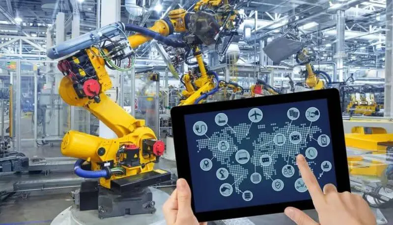

cybercomunism o que é?
cybercomunismo Historia
cybercomunismo é uma ideologia política que combina o comunismo tradicional com a tecnologia da informação e a internet. Essa ideologia propõe uma sociedade em que a tecnologia é usada para criar um sistema de troca de bens e serviços baseado na colaboração coletiva e na propriedade coletiva dos meios de produção. O principal objetivo do cybercomunismo é criar uma sociedade mais justa e igualitária, em que todos tenham as mesmas oportunidades e sejam capazes de viver suas vidas com dignidade.
A teoria do cybercomunismo
A teoria do cybercomunismo é baseada na ideia de que a tecnologia da informação pode ser usada para criar uma sociedade mais igualitária e justa. Ela propõe uma economia baseada na colaboração coletiva e na propriedade coletiva dos meios de produção. Nesse sistema, a tecnologia seria usada para automatizar processos produtivos e eliminar trabalhos desnecessários, enquanto o trabalho humano seria dedicado a atividades mais criativas e intelectuais.
Além disso, o cybercomunismo também propõe a criação de redes de distribuição descentralizadas e baseadas em algoritmos, que permitam a troca de bens e serviços entre membros da sociedade sem a necessidade de intermediários. Essas redes de distribuição poderiam incluir desde serviços básicos como transporte e alimentação até bens de consumo de alta tecnologia.
Em suma, a teoria do cybercomunismo busca criar uma sociedade mais justa e igualitária, em que a tecnologia é usada para maximizar o bem-estar de todos os seus membros

A revolução russa
A revolução russa é um momento importante na história do comunismo, mas não é diretamente relacionada ao cybercomunismo, já que a ideologia ainda não existia na época. No entanto, é possível fazer algumas conexões entre os dois movimentos.
A revolução russa foi motivada pela ideia de criar uma sociedade socialista, na qual os meios de produção seriam coletivamente controlados e gerenciados para o benefício de todos os membros da sociedade. O cybercomunismo compartilha dessa visão, embora proponha o uso da tecnologia da informação e da internet para tornar essa visão uma realidade.
O cybercomunismo também defende a descentralização do poder e a colaboração coletiva, ideias que podem ser vistas no sistema de conselhos operários (sovietes) criado na Rússia pós-revolução, embora o desenvolvimento posterior do Estado soviético tenha seguido um caminho diferente.

tecnologia para todos
A ideia de "tecnologia para todos" é fundamental para o cybercomunismo. A ideologia defende que a tecnologia deveria ser acessível a todas as pessoas, independentemente de sua renda ou posição social. Isso significa que todos deveriam ter acesso a ferramentas tecnológicas e aos recursos necessários para utilizá-las de forma criativa e produtiva.
O cybercomunismo também propõe o uso da tecnologia para melhorar a qualidade de vida das pessoas, oferecendo novas formas de trabalho, lazer e socialização. A tecnologia pode ser usada para se comunicar com pessoas de todas as partes do mundo, para acessar informações e recursos educacionais e para criar novas formas de arte e cultura.
Portanto, "tecnologia para todos" é um lema fundamental para o cybercomunismo, pois essa ideologia acredita que a tecnologia pode ser usada para criar uma sociedade mais justa e igualitária.

filosofia
Embora a ideologia do cybercomunismo seja relativamente nova, ainda não existem muitos filósofos que se identifiquem especificamente com essa corrente de pensamento. No entanto, alguns pensadores que podem ser considerados próximos a essa visão incluem: Nick Srnicek, Alex Williams, Aaron Bastani, Franco Berardi (conhecido como "Bifo"), McKenzie Wark e Paul Mason. Eles escreveram sobre as mudanças sociais e políticas que a tecnologia pode trazer e como isso pode ser usado para criar um mundo melhor e mais igualitário.

sociedade
A sociedade cybercomunista seria baseada na propriedade coletiva dos meios de produção e no uso da tecnologia da informação para criar uma economia colaborativa e descentralizada. Nesse sistema, a tecnologia seria usada para automatizar processos produtivos e eliminar trabalhos desnecessários, enquanto o trabalho humano seria dedicado a atividades mais criativas e intelectuais.
A distribuição de bens e serviços seria feita por meio de uma rede descentralizada e baseada em algoritmos, que permitiria a troca direta entre os membros da sociedade sem a necessidade de intermediários. Isso eliminaria a necessidade de empresas capitalistas e intermediários financeiros, criando um sistema baseado na colaboração e na solidariedade.

cyberpunk e o cybercomunismo
O cyberpunk e o cybercomunismo são dois movimentos que compartilham algumas semelhanças, apesar de terem visões diferentes do futuro.
O cyberpunk é um gênero de ficção científica que se concentra em um futuro distópico, onde a tecnologia se tornou onipresente e a sociedade é controlada por grandes corporações. O cybercomunismo, por outro lado, é uma ideologia política que imagina um futuro em que a tecnologia da informação é usada para criar uma sociedade mais igualitária e justa.
Apesar dessas diferenças, o cyberpunk e o cybercomunismo compartilham algumas preocupações comuns em relação à tecnologia. Ambos reconhecem que a tecnologia pode ser usada para controlar e manipular as pessoas, e defendem o uso da tecnologia como uma ferramenta para criar uma sociedade melhor e mais justa.
Além disso, o cyberpunk e o cybercomunismo também compartilham uma visão crítica do capitalismo e da economia de mercado, e defendem alternativas radicais para esses sistemas. Enquanto o cyberpunk muitas vezes se concentra na resistência individual contra as grandes corporações, o cybercomunismo propõe uma mudança coletiva na forma como a sociedade é organizada.

Um partido Cybercomunista
Um partido Cybercomunista seria um grupo político que busca espalhar e defender a ideologia do cybercomunismo. Eles propõem a criação de uma sociedade baseada na propriedade coletiva dos meios de produção e no uso da tecnologia da informação para construir uma economia colaborativa e descentralizada.
Um partido cybercomunista também defenderia a ideia de que a tecnologia deve ser acessível a todas as pessoas, independentemente de sua renda ou posição social. Eles propõem o uso da tecnologia para melhorar a qualidade de vida das pessoas, oferecendo novas formas de trabalho, lazer e socialização.
Para atingir seus objetivos, um partido cybercomunista pode trabalhar com outras organizações políticas e sociais para promover mudanças significativas na sociedade. Eles também podem se engajar em campanhas para conscientizar as pessoas sobre os benefícios de uma sociedade cybercomunista e para mobilizar o apoio popular para sua causa.